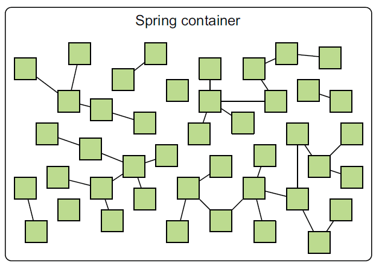
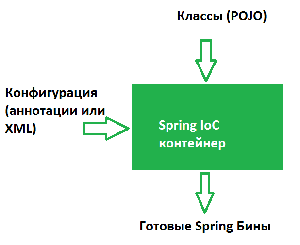
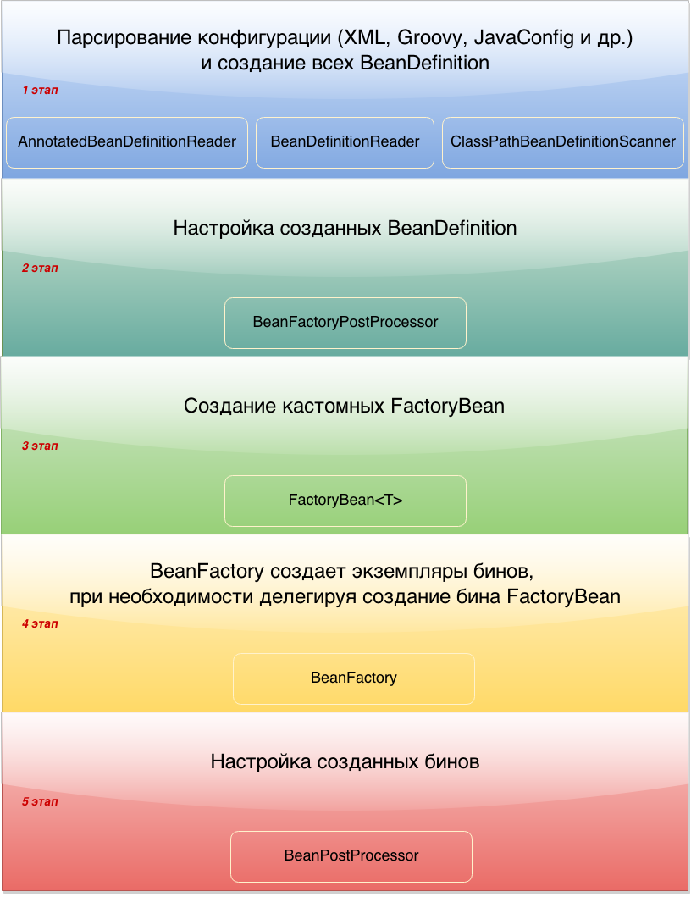
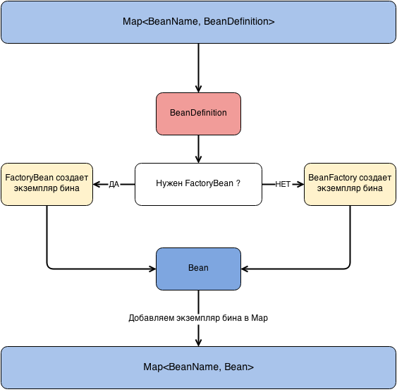
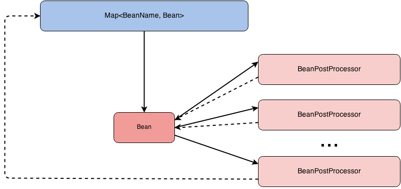
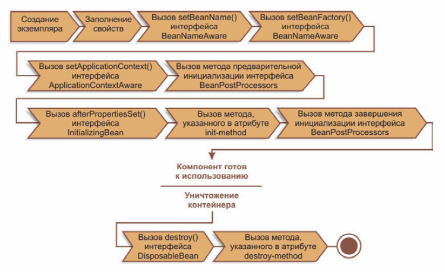
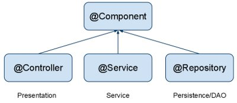

Spring Framework – это framework, который облегчает и ускоряет разработку приложений на Java.
Ключевым элементом Spring Framework является Spring Container, который выполняет основные функции:
-
IoC – Inversion of Control (Создание и управление объектами);
-
DI – Dependency Injection (внедрение зависимостей).
Container создаёт объекты, связывает их вместе, настраивает и управляет ими от создания до момента уничтожения. Эти объекты называются Spring Bean. Beans после создания помещаются в Spring Container.

В Spring имеется 2 различных вида контейнеров:
-
BeanFactory;
-
ApplicationContext.
BeanFactory Container самый простой контейнер, обеспечивающий базовую поддержку DI и который основан на интерфейсе org.springframework.beans.factory.BeanFactory. Такие интерфейсы, как BeanFactoryAware и DisposableBean всё ещё присутствуют в Spring для обеспечения обратной совместимости. Наиболее часто используемая реализация интерфейса BeanFactory – XmlBeanFactory. XmlBeanFactory получает метаданные из конфигурационного XML файла и использует его для создания настроенного приложения или системы.
BeanFactory Container обычно используется тогда, когда ресурсы ограничены (мобильные устройства). Поэтому, если ресурсы не сильно ограничены, то лучше использовать ApplicationContext.
Для того чтобы Spring Container мог создать и поместить в себя Beans необходимы:
-
Java классы (POJO), из которых создаются Beans
-
метаданные, которые подсказывают что и как создавать

Эти метаданные можно сконфигурировать несколькими способами:
-
Xml конфигурация;
-
Groovy конфигурация;
-
Конфигурация через аннотации;
-
Конфигурация через Java-код.
-
и т.д.
Bean и его атрибуты
Bean – это объект, экземпляр которого создается, собирается и иным образом управляется контейнером IoC Spring (создание, вызов методов инициализации и конфигурирование объектов путем связывания между собой).
Объекты, которые составляют основу приложения и управляются контейнером IoC Spring, называются Components (компонентами или управляемые Java-объект).
Определение Beans содержит метаданные конфигурации, которые необходимы управляющему контейнеру для получения следующей информации:
-
Как создать бин;
-
Информацию о жизненном цикле бина;
-
Зависимости бина.
С помощью этих метаданных (атрибуты бина) мы можем настраивать бины.
Bean имеет следующие атрибуты:
-
class - этот атрибут является обязательным и указывает конкретный класс Java-приложения, который будет использоваться для создания бина.
-
id/name- уникальный идентификатор бина. В случае конфигурации с помощью xml-файла, вы можете использовать свойство
idи/илиnameдля идентификации бина. -
scope - это свойство определяет область видимости создаваемых объектов.
-
constructor-arg - определяет конструктор, использующийся для внедрения зависимости. Имеет атрибут
ref, который указывает наidбина с которым нужно связываться. -
properties - определяет свойства внедрения зависимости.
-
initialization method - здесь определяется метод инициализации бина
-
destruction method - метод уничтожения бина, который будет использоваться при уничтожении контейнера, содержащего бин.
-
autowiring mode - определяет режим автоматического связывания при внедрении зависимости.
-
lazy-initialization mode - режим ленивой инициализации даёт контейнеру IoC команду создавать экземпляр бина при первом запросе, а не при запуске приложения.
Bean Scopes
Очень важной особенностью является задание области применения бинов. По умолчанию всегда используется singleton.
Scope (область видимости) определяет:
-
жизненный цикл бина;
-
возможное количество создаваемых бинов.
Разновидности bean scope:
-
Singleton – тип бина, при котором, создается одна сущность на Spring-контейнер (значение по умолчанию)
-
Prototype – тип бина, при котором, каждый раз создается новая сущность бина.
-
Request – тип бина, при котором сущность бина создается одна на request. Такой тип бина справедлив для контекста веб-приложения.
-
Session – тип бина, при котором сущность бина создается только одна на объект http-session. Такой тип бина справедлив для контекста веб-приложения.
-
Global-session – тип бина, при котором сущность бина одна создается на приложение. Такой тип бина справедлив для контекста портлета.
-
Application – тип бина, задаваемый в единственном экземпляре на контекст сервлета. Действителен для контекста веб-приложения.
Конфигурация
Как указывалось выше, существует 4 вида конфигурации метаданных для создания бинов:
-
Xml конфигурация —
ClassPathXmlApplicationContext("context.xml"); -
Groovy конфигурация —
GenericGroovyApplicationContext("context.groovy"); -
Конфигурация через аннотации с указанием пакета для сканирования —
AnnotationConfigApplicationContext("package.name"); -
JavaConfig — конфигурация через аннотации с указанием класса (или массива классов) помеченного аннотацией
@Configuration—AnnotationConfigApplicationContext(JavaConfig.class).
Xml конфигурация
Чтобы использовать настройку через xml-файл, необходимо создать ClassPathXmlApplicationContext и в параметры передать CLASSPATH xml-файла.
ApplicationContext context = new ClassPathXmlApplicationContext("applicationContext.xml");Ниже приведен пример простого конфигурационного файла xml applicationContext.xml
<?xml version="1.0" encoding="UTF-8"?>
<beans xmlns="http://www.springframework.org/schema/beans"
xmlns:xsi="http://www.w3.org/2001/XMLSchema-instance"
xmlns:context="http://www.springframework.org/schema/context"
xsi:schemaLocation="http://www.springframework.org/schema/beans
http://www.springframework.org/schema/beans/spring-beans.xsd
http://www.springframework.org/schema/context
http://www.springframework.org/schema/context/spring-context.xsd">
<bean id = "villain" class = "film.Villain" lazy-init= "true">
<property name = "name" value = "Vasily"/>
</bean>
</beans>Groovy конфигурация
При конфигурации контекста с помощью groovy-файла, необходимо сформировать GenericGroovyApplicationContext, который принимает на вход строку с конфигурацией контекста. Эта конфигурация работает по сути так же, как и xml, только с groovy-файлами. К тому же, GroovyApplicationContext нормально работает и с xml-файлом.
Пример простого конфигурационного Groovy-файла:
beans {
goodOperator(film.Operator) {bean - >
bean.lazyInit = 'true' >
name = 'Good Oleg'
}
badOperator(film.BadOperator){bean - >
bean.lazyInit = 'true' >
name = 'Bad Oleg' / >
}
}Конфигурация через аннотации
При конфигурации через аннотации используются следующие аннотации:
-
@Component -
@Repository -
@Service -
@Controller -
@RestController
@Repository
public class CoolDaoImpl implements CoolDao {
@Override
public void doCRUD() {
//some logic here
}
}@Service
@Scope(BeanDefinition.SCOPE_PROTOTYPE)
public class CoolServiceImpl implements CoolService {
@Autowired
private CoolDao dao;
@PostConstruct
public void init() {
//init logic here
}
@PreDestroy
public void closeResources() {
//close resources here
}
@Override
public void doWork() {
dao.doCRUD();
}
}Конфигурация через Java-код
Центральными артефактами при конфигурации через Java в Spring являются @Configuration и @Bean
@Configuration
public class JavaConfig {
@Bean
public ClassName getClassName() {
return new ClassName();
}
@Bean(initMethod = "init", destroyMethod = "closeResources")
@Scope(BeanDefinition.SCOPE_PROTOTYPE)
public ClassName2 getClassName2() {
ClassName2 className = new ClassName2();
className.getClassName();
return service;
}
}ApplicationContext
ApplicationContext — это главный интерфейс в Spring-приложении, который предоставляет информацию о конфигурации приложения.
ApplicationContext представляет собой Spring Container, место, где хранятся все созданные бины. Поэтому для получения бина из Spring Container нам нужно создать ApplicationContext
ApplicationContext context = new ClassPathXmlApplicationContext("applicationContext.xml");Чаще всего используются следующие реализации ApplicationContext:
-
FileSystemXmlApplicationContext- загружает данные о бине из xml-файла. При использовании этой реализации в конструкторе необходимо указать полный адрес конфигурационного файла. -
ClassPathXmlApplicationContext- этот контейнер также получает данные о бине из xml-файла. Но в отличие отFileSystemApplicationContext, в этом случае необходимо указать относительный адрес конфигурационного файла (CLASSPATH). -
WebXmlApplicationContext- эта реализацияApplicationContextполучает необходимую информацию из веб-приложения. -
AnnotationConfigApplicationContext- конфигурация через аннотации с указанием пакета для сканирования -
GenericGroovyApplicationContext- конфигурация через groovy-файл
На рисунке ниже приведены этапы формирования ApplicationContext:

Парсинг конфигурации и создание BeanDefinition
На первом этапе происходит чтение конфигураций и создание BeanDefinition.
BeanDefinition — это специальный интерфейс, через который можно получить доступ к метаданным будущего бина. В зависимости от того, какая у вас конфигурация, будет использоваться тот или иной механизм парсинга конфигурации.
XML config
Для xml конфигурации используется класс — XmlBeanDefinitionReader, который реализует интерфейс BeanDefinitionReader. XmlBeanDefinitionReader получает InputStream и загружает Document через DefaultDocumentLoader. Далее обрабатывается каждый элемент документа и если он является бином, то создается BeanDefinition на основе заполненных данных (id, name, class, alias, init-method, destroy-method и др.)
Каждый BeanDefinition помещается в map. Map хранится в классе DefaultListableBeanFactory.
Groovy config
Конфигурация через groovy очень похожа на конфигурацию через xml, за исключением того, что в файл не xml, а groovy. Чтением и парсинг groovy конфигурации занимается класс GroovyBeanDefinitionReader.
Annotations-based config
Для конфигурации через аннотации с указанием пакета для сканирования или JavaConfig используется класс AnnotationConfigApplicationContext. Этот класс имеет следующие поля, с помощью которых происходит создание BeanDefinition:
-
AnnotatedBeanDefinitionReader; -
ClassPathBeanDefinitionScanner.
ClassPathBeanDefinitionScanner сканирует указанный пакет на наличие классов помеченных аннотацией @Component (или любой другой аннотацией которая включает в себя @Component). Найденные классы парсятся и для них создаются BeanDefinition.
Чтобы сканирование было запущено, в конфигурации должен быть указан пакет для сканирования. Вся магия работы с аннотациями, как в случае с xml и groovy, заключается именно в классе ClassReader.class из пакета springframework.asm. Специфика этого ридера заключается в том, что он умеет работать с байт-кодом. То есть, ридер достает InputStream из байт-кода, сканирует его и ищет там аннотации.
AnnotatedBeanDefinitionReader работает в несколько этапов.
-
Первый этап: регистрация всех
@Configurationдля дальнейшего парсинга.
Если в конфигурации используются@Conditional, то будут зарегистрированы только те конфигурации, для которых Condition вернетtrue. Аннотация@Conditionalпоявилась в четвертой версии Spring Framework. Она используется в случае, когда на момент поднятия контекста нужно решить, создавать бин/конфигурацию или нет. Причем решение принимает специальный класс, который обязан реализовать интерфейсCondition. -
Второй этап: регистрация специального
BeanFactoryPostProcessor
Если точнее, регистрацияBeanDefinitionRegistryPostProcessor, который при помощи классаConfigurationClassParserпарсит JavaConfig и создаетBeanDefinition.
Каждый BeanDefinition помещается в map, который хранится в классе DefaultListableBeanFactory.
private final Map<String, BeanDefinition> beanDefinitionMap = new ConcurrentHashMap<String, BeanDefinition>();Настройка созданных BeanDefinition (BeanFactoryPostProcessor)
После первого этапа у нас имеется map, в котором хранятся BeanDefinition. На этом этапе у нас есть возможность повлиять на то, какими будут наши бины еще до их фактического создания, иначе говоря мы имеем доступ к метаданным класса. Для этого существует специальный интерфейс BeanFactoryPostProcessor, реализовав который, мы получаем доступ к созданным BeanDefinition и можем их изменять.
В этом интерфейсе всего один метод:
-
postProcessBeanFactory(ConfigurableListableBeanFactory beanFactory).
Метод postProcessBeanFactory() принимает параметром ConfigurableListableBeanFactory. Данная фабрика содержит много полезных методов, в том числе getBeanDefinitionNames(), через который мы можем получить все BeanDefinitionNames, а уже потом по конкретному имени получить BeanDefinition для дальнейшей обработки метаданных
Создание собственных FactoryBean
На этом этапе, если не устраивает BeanFactory из-под капота, можно создать собственные FactoryBean.
FactoryBean — это generic интерфейс, которому можно делегировать процесс создания бинов необходимого типа. В те времена, когда конфигурация была исключительно в xml, разработчикам был необходим механизм с помощью которого они бы могли управлять процессом создания бинов. Именно для этого и был сделан этот интерфейс.
Чтобы создать свою фабрику бинов (собственный FactoryBean), необходимо реализовать интерфейс FactoryBean и переопределить три его метода.
@Component
public class ClassNameFactory implements FactoryBean<ClassName> {
@Override
public ClassName getObject() throws Exception {
return new ClassName();
}
@Override
public Class<?> getObjectType() {
return ClassName.class;
}
@Override
public boolean isSingleton() {
return false;
}
}Создание экземпляров бинов
На этом этапе происходит создание бинов.
-
Созданием экземпляров бинов занимается BeanFactory при этом, если нужно, делегирует это кастомным FactoryBean.
-
Экземпляры бинов создаются на основе ранее созданных BeanDefinition.
-
При этом важно знать, что на этапе поднятия контекста создаются только бины с областью видимости Singleton.
-
Остальные бины создаются тогда, когда необходимы.

Настройка созданных бинов (BeanPostProcessor)
На данном этапе можно производить дополнительную настройку созданных бинов. Настройка производиться через интерфейс BeanPostProcessor.
BeanPostProcessor - позволяет настраивать бины до того, как они попадут в Spring контейнер. Данный интерфейс имеет два метода.
-
postProcessBeforeInitialization(Object bean, String beanName); -
postProcessAfterInitialization(Object bean, String beanName).
BeanFactory вызывает оба метода для каждого бина, и прогоняет бин через все BeanPostProcessor. У обоих методов параметры абсолютно одинаковые. Разница только в порядке их вызова. Первый вызывается до init-метода, второй, после.
Порядок в котором будут вызваны BeanPostProcessor не известен, но мы точно знаем что выполнены они будут последовательно.
Важно понимать, что на данном этапе экземпляр бина уже создан и идет его донастройка. Процесс донастройки показан на рисунке ниже.

@Component
public class ClassBeanPostProcessor implements BeanPostProcessor {
@Override
public Object postProcessBeforeInitialization(Object bean, String beanName) throws BeansException {
return bean;
}
@Override
public Object postProcessAfterInitialization(Object bean, String beanName) throws BeansException {
return bean;
}
}Схема создания бинов
Несмотря на кажущуюся сложность, жизненный цикл бинов крайне прост и лёгок для понимания. После создания экземпляра бина, могут понадобиться некоторые действия для того, чтобы сделать его работоспособным. Также при удалении бина из контейнера, необходима очистка.

-
Spring создает bean.
-
Spring задает значения и ссылки в поля bean.
-
Если bean реализует
BeanNameAware, Spring передает ID бина в методsetBeanName(). -
Если bean реализует
BeanFactoryAware, Spring вызываетsetBeanFactory(), передавая туда bean factory. -
Если bean реализует интерфейс
ApplicationContextAware, Spring вызоветsetApplicationContext(), передавая по ссылке контекст приложения. -
Если bean реализует интерфейс
BeanPostProcessor, Spring вызывает метод бинаpostProcessBeforeInitialization(). -
На этом происходит вызов методов init(). Если bean реализуют интерфейс
InitializingBean, Spring вызывает методafterPropertiesSet().
public class CachingMovieLister {
@PostConstruct
public void populateMovieCache() {
}
}-
Если bean реализует
BeanPostProcessor, Spring вызовет метод бинаpostProcessAfterInitialization(). -
В этой точке, bean готов для использования приложением и останется в контексте приложения, пока контекст не будет уничтожен.
-
На этом происходит вызов методов destroy(). Если bean реализует интерфейс
DisposableBean, Spring вызоветdestroy()метод.
public class CachingMovieLister {
@PreDestroy
public void clearMovieCache() {
}
}-
Компонент перестает существовать.
IoC, DI, @Autowired
Как было описано выше, ядром Spring является контейнер Inversion of Control, функция которого создать и управлять объектами (бинами), а благодаря основной реализации Dependency Injection и связывать различные объекты между собой.
Связывать объекты между собой можно несколькими способами:
-
С помощью конструктора
public class MovieRecommender {
private final CustomerPreferenceDao customerPreferenceDao;
@Autowired
public MovieRecommender(CustomerPreferenceDao customerPreferenceDao) {
this.customerPreferenceDao = customerPreferenceDao;
}
}-
С помощью метода (сеттер)
public class SimpleMovieLister {
private MovieFinder movieFinder;
@Autowired
public void setMovieFinder(MovieFinder movieFinder) {
this.movieFinder = movieFinder;
}
}-
Через поле
public class MovieRecommender {
@Autowired
private MovieCatalog movieCatalog;
}По умолчанию внедрение зависимостей через методы или поля рассматриваются как обязательные зависимости. Однако, Вы можете изменить это поведение, устанавливая для required атрибута @Autowired значение false:
public class SimpleMovieLister {
private MovieFinder movieFinder;
@Autowired(required = false)
public void setMovieFinder(MovieFinder movieFinder) {
this.movieFinder = movieFinder;
}
}В ситуации, когда имеются два бина для внедрения можно воспользоваться следующими аннотациями:
-
@Primary- указывает, что текущий бин будет внедряться по умолчанию, если их несколько
@Configuration
public class MovieConfiguration {
@Bean
@Primary
public MovieCatalog firstMovieCatalog() { ... }
@Bean
public MovieCatalog secondMovieCatalog() { ... }
}-
@Qualifier- указывает какой бин необходимо использовать для внедрения
@Component
@Qualifier("Action")
public class ActionMovieCatalog implements MovieCatalog {
}public class MovieRecommender {
@Autowired
@Qualifier("Action")
private MovieCatalog movieCatalog;
}@Component, @Service и другие аннотации
В Spring используются следующие аннотации:
-
@Component
Аннотация для любого компонента фреймворка. -
@Repository
(Доменный слой) Аннотация показывает, что класс функционирует как репозиторий и требует наличия прозрачной трансляции исключений. Преимуществом трансляции исключений является то, что слой сервиса будет иметь дело с общей иерархией исключений от Spring (DataAccessException) вне зависимости от используемых технологий доступа к данным в слое данных. -
@Service
(Сервис-слой приложения) Аннотация, объявляющая, что этот класс представляет собой сервис – компонент сервис-слоя. Сервис является подтипом класса@Component. Использование данной аннотации позволит искать бины-сервисы автоматически. -
@Controller
(Слой представления) Аннотация для маркировки java класса, как класса контроллера. Данный класс представляет собой компонент, похожий на обычный сервлет (HttpServlet) (работающий с объектами HttpServletRequest и HttpServletResponse), но с расширенными возможностями от Spring Framework. -
@RestController
Аннотация аккумулирует поведение двух аннотаций@Controllerи@ResponseBody(показывает что данный метод может возвращать собственный объект в виде xml, json и другие).

Данные аннотации используются при конфигурации приложения через аннотации.
Основной считается @Component, общий стереотип для любого компонента, управляемого Spring. @Repository, @Service И @Controller являются специализациями @Component для более конкретных случаев применения (в настойчивости, обслуживании и презентации слоев, соответственно).
Бины, получившиеся при помощи @Repository, дополнительно имеют обработку для JDBC Exception.
@RestController = @Controller + @ResponseBody. Этот бин для конвертации входящих/исходящих данных использует Jackson message converter. Как правило, целевые данные представлены в json или xml.